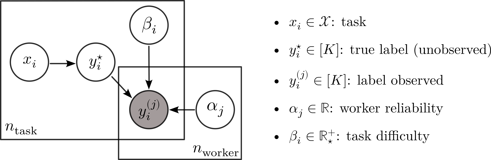

![]()
Hide/Show the code
! peerannot simulate --n-worker=30 --n-task=200 --n-classes=5 \
--strategy independent-confusion \
--feedback=10 --seed 0 \
--folder ./simus/independent ISSN 2824-7795
ISSN 2824-7795
Crowdsourcing is a fast and easy way to collect labels for large datasets. However, it is common for workers to disagree with each other. The sources of errors might come from the workers’ abilities, but also from the task’s intrinsic difficulty. We introduce peerannot: a Python library to handle crowdsourced labels and learn from them.
Crowdsourcing is a fast and easy way to collect labels for large datasets. However, it is common for workers to disagree with each other. The sources of errors might come from the workers’ abilities, but also from the task’s intrinsic difficulty. We introduce peerannot: a Python library to handle crowdsourced labels and learn from them. Our library allows users to aggregate labels from common noise models or train a deep-learning based classifier directly from crowdsourced labels. Moreover, we provide an identification module to explore both the datasets’ tasks difficulty and workers abilities easily.
Image datasets widely use crowdsourcing to collect labels. This allows workers to annotate images for a small cost and faster than using expert labeling. Many classical datasets using machine learning have been created with human intervention to create labels, such as CIFAR-10, (Krizhevsky and Hinton 2009), ImageNet (Deng et al. 2009) or (Garcin et al. 2021) in image classification, but also COCO (Lin et al. 2014), solar photovoltaic arrays (Kasmi et al. 2023) or even macro litter (Chagneux et al. 2023) in image segmentation and object counting.
Crowdsourced datasets induce at least three entangled problems to which we contribute with peerannot:
aggregate command.aggregate-deep command.identify command.The library peerannot addresses these practical questions within a reproducible setting. Indeed, the complexity of experiments often leads to a lack of transparency and reproducible results for simulations and real datasets. We propose standard simulation settings with explicit parameter implementations that can be shared. For real datasets, peerannot is compatible with standard neural networks architectures from the Torchvision (Marcel and Rodriguez 2010) library and Pytorch (Paszke et al. 2019), allowing a flexible framework with easy-to-share scripts to reproduce experiments.

peerannot library.Let us consider the classical supervised learning classification framework. A training set \mathcal{D}=\{(x_i, y_i^\star)\}_{i=1}^{n_{\text{task}}} is composed of n_{\text{task}} tasks x_i\in\mathcal{X} with ground truth label y_i^\star \in\mathcal [K]={1,\dots,K} one of the K possible classes. In the following, the tasks considered are generally RGB images. We use the notation \sigma for the softmax function.
What differs from the classical setting with crowdsourced data, is that the ground truth y_i^\star is unknown. However, instead for a given task x_i, a worker w_j proposes their label denoted y_i^{(j)}. The set of workers answering the task x_i is denoted \mathcal{A}(x_i)=\{j\in[n_\text{worker}]: w_j \text{ answered }x_i\}. The cardinal \vert \mathcal{A}(x_i)\vert is called the feedback effort on the task x_i. The feedback effort can not exceed the total number of workers n_{\text{worker}}. Mirroring the point of view by considering the workers and not the tasks: the set of tasks answered by a worker w_j is denoted \mathcal{T}(w_j)=\{i\in[n_\text{task}]: w_j \text{ answered } x_i\}. The cardinal \vert \mathcal{T}(w_j)\vert is called the workerload of w_j. The final dataset is: \mathcal{D}_{\text{train}} := \bigcup_{i\in[n_\text{task}]} \{(x_i, (y_i^{(j)}) \text{ for }j\in\mathcal{A}(x_i))\} = \bigcup_{j\in[n_\text{worker}]} \{(x_i, (y_i^{(j)})) \text{ for }i \in\mathcal{T}(w_j)\} \enspace.
In this article, we do not address the setting where workers report their self-confidence (XXX), nor settings where workers are presented a trapping set – i.e a subset of tasks where the ground truth is known to evaluate them with known labels (Khattak 2017).
peerannotTo store crowdsourcing datasets efficiently and in a standardized fashion, peerannot proposes the following structure:
datasetname
├── train
│ ├── class0
│ │ ├─ task0-<vote_index_0>.png
│ │ ├─ task1-<vote_index_1>.png
│ │ ├─ ...
│ │ └─ taskn0-<vote_index_n0>.png
│ ├── class1
│ ├── ...
│ └── classK
├── val
├── test
├── metadata.json
└── answers.jsonEach dataset is its folder. If the tasks (images) are available, they must be stored as it is usual to store ImageFolder datasets with pytorch into a train, val and test folder. Each image can have its name followed by its index in the answers.json file.
The answers.json file stores the different votes for each task as described in Figure 1. Finally, a metadata.json file include all relevant information related to the crowdsourcing experiment such as the number of workers, number of tasks, etc.

answers.json file for a binary classification task on recognising smiling faces.In this example, there are three tasks, n_{worker}=4 workers and K=2 classes. For the first task, the feedback effort is \vert\mathcal{A}(x_1)\vert=4. The workerload of w_2 is \vert\mathcal{T}(w_2)\vert=2.
The first question we address with peerannot is: How to aggregate multiple labels into a single label from crowdsourced tasks? The aggregation step can lead to two types of learnable labels \hat y_i\in\Delta_{K} defined on the simplex of dimension K-1 depending on the use case:
Learning from soft labels has been shown to improve learning performance and make the classifier learn the task ambiguity. XXX However, crowdsourcing is often used as a stepping stone to creating a new dataset and we usually expect a classification dataset to associate a task x_i to a single label and not a full probability distribution. In this case, we recommend in practice releasing the anonymous answered labels and the aggregation strategy used to reach a consensus on a single label. With peerannot, both soft and hard labels can be produced. Note that when a strategy produces a soft label, a hard label can be induced by taking the class with the maximum probability.
While the most intuitive way to create a label from multiple answers for any type of crowdsourced task would be to take the majority vote (MV), this strategy has many shortcomings (James 1998) – there is no noise model, no worker reliability estimated, no task difficulty involved and especially no way to remove poorly performing workers. This baseline aggregation can be expressed as:
\hat y_i^{\text{MV}} = \operatornamewithlimits{argmax}_{k\in[K]} \sum_{j\in\mathcal{A}(x_i)} 1_{\{y_i^{(j)}=k\}} \enspace.
One pitfall with the MV is that the label produced is hard, hence the ambiguity is discarded by construction. To remedy this, the Naive Soft (NS) labeling consists in using the empirical frequency distribution as the task label:
\hat y_i^{\text{NS}} = \bigg(\frac{1}{\vert\mathcal{A}(x_i)\vert}\sum_{j\in\mathcal{A}(x_i)} 1_{\{y_i^{(j)}=k\}} \bigg)_{j\in[K]} \enspace. With the NS label, we keep the ambiguity, but all workers and all tasks are put on the same level. In practice, it is known that each worker comes with their abilities, thus modeling this knowledge can produce better results.
Going further into the aggregation, researchers began creating a noise model to take into account the workers’ abilities in the aggregation. These types of models are most often EM-based and one of the most studied (Gao and Zhou 2013) and applied (Servajean et al. 2017; Rodrigues and Pereira 2018) is the Dawid and Skene’s (DS) model (Dawid and Skene 1979). Assuming the workers are answering tasks independently, this model boils down to model pairwise confusions between each possible class. Each worker w_j is assigned a confusion matrix \pi^{(j)}\in\mathbb{R}^{K\times K} such that \pi^{(j)}_{k\ell} = \mathbb{P}(y_i^{(j)}=\ell\vert y_i^\star=k). The model assumes that the probability for a task x_i to have true label y_i^\star=k follows a multinomial distribution with probabilities \pi^{(j)}_{k,\bullet} for each worker. Each class has a prevalence \rho_k=\mathbb{P}(y_i^\star=k) to appear in the dataset. Using the independence between workers, we obtain the following likelihood to maximize (using the EM algorithm):
\displaystyle\prod_{i\in [n_{\texttt{task}}]}\prod_{k \in [K]}\bigg[\rho_k\prod_{j\in [n_{\texttt{worker}}]} \prod_{k\in [K]}\big(\pi^{(j)}_{k, k}\big)^{1_{\{y_i^{(j)}=k\}}} \bigg]^{T_{ik}},
with T_{i,k}=1_{\{y_i^{\star}=k \}}. The final aggregated soft label is \hat y_i^{\text{DS}} = T_{i,\cdot}.

Many variants of the DS model have been proposed in the literature, using Dirichlet priors on the confusion matrices (Passonneau and Carpenter 2014), using L clusters of workers (Imamura, Sato, and Sugiyama 2018) with 1\leq L\leq n_{\text{worker}} (DSWC) or even faster implementation that produces only hard labels (Sinha, Rao, and Balasubramanian 2018).
Finally, we present the GLAD model (Whitehill et al. 2009) that not only takes into account the worker’s ability, but also the task difficulty in the noise model. Denoting \alpha_j\in\mathbb{R} the worker ability (the higher the better) and \beta_i\in\mathbb{R}^+_\star the task’s difficulty (the higher the easier), the model noise is:
\mathbb{P}(y_i^{(j)}=y_i^\star\vert \alpha_j,\beta_i) = \frac{1}{1+\exp(-\alpha_j\beta_i)} \enspace. GLAD’s model also assumes that the errors are uniform across wrong labels, thus: \forall k \in [K],\ \mathbb{P}(y_i^{(j)}=k\vert y_i^\star\neq k,\alpha_j,\beta_i) = \frac{1}{K-1}\left(1-\frac{1}{1+\exp(-\alpha_j\beta_i)}\right)\enspace. The likelihood can then be optimized using an EM algorithm to recover the soft label \hat y_i^{\text{GLAD}}.

All of these aggregation strategies – and more – are available in the peerannot library from the peerannot.models module. Each model is a class object in its own Python file. It inherits from the CrowdModel template class and is defined with at least two methods: - run: includes the optimization procedure to obtain needed weights (e.g. the EM algorithm for the DS model), - get_probas: returns the soft labels output for each task.
One way to evaluate the label aggregation strategies is to measure their accuracy. This means that the underlying ground truth must be known – or at least for a representative subset. As the set of n_{\text{task}} can be seen as a training set for a future classifier, we denote this metric \operatornamewithlimits{AccTrain} on a dataset \mathcal{D} for a given aggregated label (\hat y_i)_i as:
\operatornamewithlimits{AccTrain}(\mathcal{D}) = \frac{1}{\vert \mathcal{D}\vert}\sum_{i=1}^{\vert\mathcal{D}\vert} 1_{\{y_i^\star=\operatornamewithlimits{argmax}_{k\in[K]}\hat y_i\}} \enspace.
In the following, we write \operatornamewithlimits{AccTrain} for \operatornamewithlimits{AccTrain}(\mathcal{D}_{\text{train}}) as we only consider the full training set so there is no ambiguity. While this metric is useful, in practice there are a few arguable issues:
We first consider classical simulation settings in the literature that can easily be created and reproduced using peerannot.
The independent mistakes consider that each worker w_j answers following a multinomial distribution with weights given at the row y_i^\star of their confusion matrix \pi^{(j)}\in\mathbb{R}^{K\times K}. Each confusion matrix is generated diagonally dominant. Answers are independent of one another as each matrix is generated independently and each worker answers independently of other workers. In this setting, the DS model is expected to perform the best with enough data as we are simulating data from its assumed noise model.
We simulate n_{\text{task}}=200 tasks and n_{\text{worker}}=30 workers with K=5 possible classes. Each task receives \vert\mathcal{A}(x_i)\vert=10 labels.
! peerannot simulate --n-worker=30 --n-task=200 --n-classes=5 \
--strategy independent-confusion \
--feedback=10 --seed 0 \
--folder ./simus/independentfrom peerannot.helpers.helpers_visu import feedback_effort, working_load
import seaborn as sns
import matplotlib.pyplot as plt
from matplotlib.ticker import MaxNLocator
from pathlib import Path
import matplotlib.ticker as mtick
sns.set_style("whitegrid")
votes_path = Path.cwd() / "simus" / "independent" / "answers.json"
metadata_path = Path.cwd() / "simus" / "independent" / "metadata.json"
efforts = feedback_effort(votes_path)
workerload = working_load(votes_path, metadata_path)
feedback = feedback_effort(votes_path)
nbins = 17
fig, ax = plt.subplots(1, 2, figsize=(9, 4))
sns.histplot(workerload, stat="percent", bins=nbins, shrink=1, ax=ax[0])
ax[0].yaxis.set_major_formatter(mtick.PercentFormatter(decimals=0))
ax[0].set_xlabel(r"$\vert\mathcal{T}(w_j)\vert$")
sns.histplot(feedback, stat="percent", bins=nbins, shrink=1, ax=ax[1])
ax[1].yaxis.set_major_formatter(mtick.PercentFormatter(decimals=0))
ax[1].set_xlabel(r"$\vert\mathcal{A}(x_i)\vert$")
ax[1].xaxis.set_major_locator(plt.MaxNLocator(3))
for i in range(2):
ax[i].xaxis.set_major_locator(MaxNLocator(3))
ax[i].xaxis.label.set_size(15)
ax[i].yaxis.label.set_size(15)
ax[i].xaxis.set_tick_params(labelsize=13)
ax[i].yaxis.set_tick_params(labelsize=13)
ax[i].title.set_size(18)
plt.tight_layout()
plt.show()
With the obtained answers, we can look at the aforementioned aggregation strategies performance:
for strat in ["MV", "NaiveSoft", "DS", "GLAD", "DSWC[L=5]", "DSWC[L=10]"]:
! peerannot aggregate ./simus/independent/ -s {strat}import pandas as pd
import numpy as np
from IPython.display import display
simu_indep = Path.cwd() / 'simus' / "independent"
results = {"mv": [], "naivesoft": [], "glad": [], "ds": [], "dswc[l=5]": [], "dswc[l=10]": []}
for strategy in results.keys():
path_labels = simu_indep / "labels" / f"labels_independent-confusion_{strategy}.npy"
ground_truth = np.load(simu_indep / "ground_truth.npy")
labels = np.load(path_labels)
acc = (
np.mean(labels == ground_truth)
if labels.ndim == 1
else np.mean(
np.argmax(labels, axis=1)
== ground_truth
)
)
results[strategy].append(acc)
results = pd.DataFrame(results, index=['AccTrain'])
results.columns = map(str.upper, results.columns)
results = results.style.set_table_styles([dict(selector='th', props=[('text-align', 'center')])])
results.set_properties(**{'text-align': 'center'})
results = results.format(precision=3)
display(results)| MV | NAIVESOFT | GLAD | DS | DSWC[L=5] | DSWC[L=10] | |
|---|---|---|---|---|---|---|
| AccTrain | 0.750 | 0.760 | 0.775 | 0.890 | 0.775 | 0.770 |
The correlated mistakes are also known as the student-teacher setting. Consider that the crowd of workers is divided into two categories: teachers and students such that n_{\text{teacher}} + n_{\text{student}}=n_{\text{worker}}. Each student is randomly assigned to one teacher at the beginning of the experiment. We generate the (diagonally dominant) confusion matrices of each teacher and the students are associated with their’s teacher confusion matrix. Then, they all answer independently, following a multinomial distribution with weights given at the row y_i^\star of their confusion matrix \pi^{(j)}\in\mathbb{R}^{K\times K}.
We simulate n_{\text{task}}=200 tasks and n_{\text{worker}}=50 with 80\% of students in the crowd. There are K=5 possible classes. Each task receives \vert\mathcal{A}(x_i)\vert=10 labels.
! peerannot simulate --n-worker=50 --n-task=200 --n-classes=5 \
--strategy student-teacher \
--ratio 0.8 \
--feedback=10 --seed 0 \
--folder ./simus/student_teachervotes_path = Path.cwd() / "simus" / "student_teacher" / "answers.json"
metadata_path = Path.cwd() / "simus" / "student_teacher" / "metadata.json"
efforts = feedback_effort(votes_path)
workerload = working_load(votes_path, metadata_path)
feedback = feedback_effort(votes_path)
nbins = 17
fig, ax = plt.subplots(1, 2, figsize=(9, 4))
sns.histplot(workerload, stat="percent", bins=nbins, shrink=1, ax=ax[0])
ax[0].yaxis.set_major_formatter(mtick.PercentFormatter(decimals=0))
ax[0].set_xlabel(r"$\vert\mathcal{T}(w_j)\vert$")
sns.histplot(feedback, stat="percent", bins=nbins, shrink=1, ax=ax[1])
ax[1].yaxis.set_major_formatter(mtick.PercentFormatter(decimals=0))
ax[1].set_xlabel(r"$\vert\mathcal{A}(x_i)\vert$")
ax[1].xaxis.set_major_locator(plt.MaxNLocator(3))
for i in range(2):
ax[i].xaxis.set_major_locator(MaxNLocator(3))
ax[i].xaxis.label.set_size(15)
ax[i].yaxis.label.set_size(15)
ax[i].xaxis.set_tick_params(labelsize=13)
ax[i].yaxis.set_tick_params(labelsize=13)
ax[i].title.set_size(18)
plt.tight_layout()
plt.show()
With the obtained answers, we can look at the aforementioned aggregation strategies performance:
for strat in ["MV", "NaiveSoft", "DS", "GLAD", "DSWC[L=5]", "DSWC[L=10]"]:
! peerannot aggregate ./simus/student_teacher/ -s {strat}simu_corr = Path.cwd() / 'simus' / "student_teacher"
results = {"mv": [], "naivesoft": [], "glad": [], "ds": [], "dswc[l=5]": [], "dswc[l=10]": []}
for strategy in results.keys():
path_labels = simu_corr / "labels" / f"labels_student-teacher_{strategy}.npy"
ground_truth = np.load(simu_corr / "ground_truth.npy")
labels = np.load(path_labels)
acc = (
np.mean(labels == ground_truth)
if labels.ndim == 1
else np.mean(
np.argmax(labels, axis=1)
== ground_truth
)
)
results[strategy].append(acc)
results = pd.DataFrame(results, index=['AccTrain'])
results.columns = map(str.upper, results.columns)
results = results.style.set_table_styles([dict(selector='th', props=[('text-align', 'center')])])
results.set_properties(**{'text-align': 'center'})
results = results.format(precision=3)
display(results)| MV | NAIVESOFT | GLAD | DS | DSWC[L=5] | DSWC[L=10] | |
|---|---|---|---|---|---|---|
| AccTrain | 0.720 | 0.720 | 0.680 | 0.765 | 0.725 | 0.695 |
For the final simulation setting, we consider the discrete difficulty presented in Whitehill et al. (2009). Contrary to other simulations, we here consider that each worker is either good or bad and each task is either easy or hard. Easy tasks are answered without mistakes by involved workers. However, hard tasks are answered following the worker’s confusion matrix. The confusion matrix \pi^{(j)} is diagonally dominant for good workers while each row is drawn uniformly in the simplex \Delta_K for bad workers. Each worker then answers independently to the presented tasks.
We simulate n_{\text{task}}=500 tasks and n_{\text{worker}}=100 with 35\% of good workers in the crowd and 50\% of easy tasks. There are K=5 possible classes. Each task receives \vert\mathcal{A}(x_i)\vert=10 labels.
! peerannot simulate --n-worker=100 --n-task=200 --n-classes=5 \
--strategy discrete-difficulty \
--ratio 0.35 --ratio-diff 1 \
--feedback 10 --seed 0 \
--folder ./simus/discrete_difficultyvotes_path = Path.cwd() / "simus" / "discrete_difficulty" / "answers.json"
metadata_path = Path.cwd() / "simus" / "discrete_difficulty" / "metadata.json"
efforts = feedback_effort(votes_path)
workerload = working_load(votes_path, metadata_path)
feedback = feedback_effort(votes_path)
nbins = 17
fig, ax = plt.subplots(1, 2, figsize=(9, 4))
sns.histplot(workerload, stat="percent", bins=nbins, shrink=1, ax=ax[0])
ax[0].yaxis.set_major_formatter(mtick.PercentFormatter(decimals=0))
ax[0].set_xlabel(r"$\vert\mathcal{T}(w_j)\vert$")
sns.histplot(feedback, stat="percent", bins=nbins, shrink=1, ax=ax[1])
ax[1].yaxis.set_major_formatter(mtick.PercentFormatter(decimals=0))
ax[1].set_xlabel(r"$\vert\mathcal{A}(x_i)\vert$")
for i in range(2):
ax[i].xaxis.set_major_locator(MaxNLocator(3))
ax[i].xaxis.label.set_size(15)
ax[i].yaxis.label.set_size(15)
ax[i].xaxis.set_tick_params(labelsize=13)
ax[i].yaxis.set_tick_params(labelsize=13)
ax[i].title.set_size(18)
plt.tight_layout()
plt.show()
With the obtained answers, we can look at the aforementioned aggregation strategies performance:
for strat in ["MV", "NaiveSoft", "DS", "GLAD", "DSWC[L=2]", "DSWC[L=5]"]:
! peerannot aggregate ./simus/discrete_difficulty/ -s {strat}simu_corr = Path.cwd() / 'simus' / "discrete_difficulty"
results = {"mv": [], "naivesoft": [], "glad": [], "ds": [], "dswc[l=2]": [], "dswc[l=5]": []}
for strategy in results.keys():
path_labels = simu_corr / "labels" / f"labels_discrete-difficulty_{strategy}.npy"
ground_truth = np.load(simu_corr / "ground_truth.npy")
labels = np.load(path_labels)
acc = (
np.mean(labels == ground_truth)
if labels.ndim == 1
else np.mean(
np.argmax(labels, axis=1)
== ground_truth
)
)
results[strategy].append(acc)
results = pd.DataFrame(results, index=['AccTrain'])
results.columns = map(str.upper, results.columns)
results = results.style.set_table_styles([dict(selector='th', props=[('text-align', 'center')])])
results.set_properties(**{'text-align': 'center'})
results = results.format(precision=3)
display(results)| MV | NAIVESOFT | GLAD | DS | DSWC[L=2] | DSWC[L=5] | |
|---|---|---|---|---|---|---|
| AccTrain | 0.820 | 0.790 | 0.845 | 0.810 | 0.600 | 0.660 |
Most often, tasks are crowdsourced to create a large training set as modern machine learning models require more and more data. The aggregation step then simply becomes the first step in the complete learning pipeline. However, instead of aggregating labels, modern neural networks let us directly train a classifier from multiple noisy labels.
In recent years, directly learning a classifier from noisy labels was introduced. Two of the most used models: CrowdLayer (Rodrigues and Pereira 2018) and CoNAL (Chu, Ma, and Wang 2021), are directly available in peerannot. These two learning strategies directly incorporate a DS-based noise model in the neural network’s architecture.
CrowdLayer trains a classifier with noisy labels as follows. Let the scores (logits) output of a given classifier neural network \mathcal{C} be z_i=\mathcal{C}(x_i). Then CrowdLayer adds a new layer \pi\in\mathbb{R}^{n_{\text{worker}}\times K\times K}, the tensor of all \pi^{(j)}s such that the crossentropy loss (\mathrm{CE}) is adapted to the crowdsourcing setting into \mathcal{L}_{CE}^{\text{CrowdLayer}} and computed as: \mathcal{L}_{CE}^{\text{CrowdLayer}}(x_i) = \sum_{j\in\mathcal{A}(x_i)} \mathrm{CE}(\sigma\left(\pi^{(j)}\sigma\big(z_i\big)\right), y_i^{(j)}) \enspace.
The confusion matrices are incorporated as is into the network architecture as a new layer to transform the output probabilities to match each worker’s answer. However, for some datasets, it was noticed that global confusion occurs between the proposed classes. It is the case for example in the LabelMe dataset (Rodrigues et al. 2017) where classes overlap. In this case, Chu, Ma, and Wang (2021) proposed to extend the CrowdLayer model by not only modeling the worker confusion matrices; but also a global confusion matrix \pi^g\in\mathbb{R}^{K\times K}.

Given the output z_i=\mathcal{C}(x_i)\in\mathbb{R}^K of a given classifier and task, CoNAL interpolates between the local confusion \pi^{(j)}\sigma(z_i) and the global one \pi^g\sigma(z_i). The loss function is computed as follows: \begin{aligned} &\mathcal{L}_{CE}^{\text{CoNAL}}(x_i) = \sum_{j\in\mathcal{A}(x_i)} \mathrm{CE}(h_i^{(j)}, y_i^{(j)}) \enspace, \\ &\text{with } h_i^{(j)} = \sigma\left(\big(\omega_i^{(j)} \pi^g + (1-\omega_i^{(j)})\pi^{(j)}\big)z_i\right) \enspace. \end{aligned} \
The interpolation weight is defined as s_i^{(j)}\sim\mathcal{B}(w_i^{(j)}) and is unobservable in practice. So, to compute h_i^{(j)}, the weight is obtained through an auxiliary network that projects the task x_i onto v_i and the worker w_j onto u_j, two vectors in an embedding space of dimension d\geq 1. Finally, w_i^{(j)}=(1+\exp(- u_j^\top v_i))^{-1}.
Both CrowdLayer and CoNAL model worker confusions directly in the classifier’s weights to learn from the noisy collected labels and are available in peerannot as we will see in the following.
The \mathrm{AccTrain} metric presented in Section 3.2 might no longer be of interest when training a classifier. Classical error measurements involve a test dataset to estimate the generalization error. To do so, we present hereafter two error metrics. Assuming we trained our classifier f_\theta on a training set: - the test accuracy is computed as \frac{1}{n_{\text{test}}}\sum_{i=1}^{n_{\text{test}}}1_{\{y_i^\star = \widehat{f_\theta(x_i)}\}} - the expected calibration error (Guo et al. 2017), computed as: XXX
Where the accuracy represents how well the classifier generalizes, the expected calibration error (ECE) quantifies the deviation between the accuracy and the confidence of the classifier. Modern neural networks are known to often be overconfident in their predictions XXX. However, it has also been remarked that training on crowdsourced data, depending on the strategy, mitigates this confidence issue. That is why we propose to compare them both in our coming experiments. Note that the ECE error estimator is known to be biased (Gruber and Buettner 2022). Smaller training sets are known to have a higher ECE estimation error. And in the crowdsourcing setting, openly available datasets are often quite small.
peerannot on real datasetsFew real crowdsourcing experiments have been released publicly. Among the available ones, CIFAR-10H (Peterson et al. 2019) is one of the largest with 10 000 tasks labeled by workers (the testing set of CIFAR-10). The issue with CIFAR-10H is that there are little to no disagreements and a simple majority voting leads to a near-perfect \mathrm{AccTrain} error. While with this dataset comparing the impact of aggregation and end-to-end strategies might not be relevant, it is a good benchmark for task difficulty identification and worker evaluation scoring XXX
The LabelMe dataset was extracted from crowdsourcing segmentation experimentation and a subset of K=8 classes was released in Rodrigues et al. (2017).
To install these datasets, we run the install command from peerannot:
! peerannot install ./datasets/labelme/labelme.py
! peerannot install ./datasets/cifar10H/cifar10h.pyLet us use peerannot to train a Resnet34 on the LabelMe dataset for:
As we can see, CoNAL strategy performs best. In this case, it is expected behavior as CoNAL was created for the LabelMe dataset. However, using peerannot we can look into **why modeling common confusion returns better results with this dataset. To do so, we can explore the datasets from two points of view: worker-wise or task-wise.
If a dataset requires citizen knowledge to be labeled, it is because expert knowledge is long and costly to obtain. In the era of big data, where datasets are built using web scraping XXX and other techniques, citizen science is popular as it is an easy way to produce many labels.
However, mistakes and confusions happen during these experiments. Sometimes involuntarily (e.g. because the task is too hard or the worker is unable to differentiate between two classes) and sometimes not (e.g. the worker is a spammer).
Underlying all the learning models and aggregation strategies, the cornerstone of crowdsourcing is evaluating the trust we put in each worker depending on the presented task. And with the gamification of crowdsourcing XXX, it has become essential to find scoring metrics both for workers and tasks to keep citizens in the loop so to speak. This is the purpose of the identification module in peerannot
To explore the tasks’ intrinsic difficulty, we propose to compare three scoring metrics:
Note that each of these statistics is useful in its context. The entropy can not be used in a setting with |\mathcal{A}(x_i)| low (few labels per task), in particular for the LabelMe dataset it is not informative. The WAUM can work with any number of labels, but the larger the better. However, as it uses a deep learning classifier, the WAUM needs the tasks (x_i)_i in addition to the proposed labels while the other strategies are feature-blind.
First, let us consider a dataset with a large number of tasks, annotations and workers: the CIFAR-10H dataset by Peterson et al. (2019).
import torch
import matplotlib.pyplot as plt
from PIL import Image
from pathlib import Path
nrow = 5
ncol = 5
fig, axs = plt.subplots(
nrow,
ncol,
sharey="row",
sharex="col",
figsize=(12,8)
)
match_ = {0: "bird", 1: "car", 2: "cat", 3: "deer", 4: "dog", 5: "frog", 6: "horse", 7: "plane", 8: "ship", 9: "truck"}
path = Path.cwd() / "datasets" / "cifar10H" / "train"
for i in range(nrow):
img_folder = path / f"{match_[i]}"
all_imgs = list(img_folder.glob("*"))[:ncol]
for j in range(ncol):
image = np.asarray(Image.open(path / all_imgs[j]))
axs[i,j].imshow(image, aspect="equal")
axs[i,j].axis("off")
axs[i,j].set_yticklabels([])
plt.subplots_adjust(left=0.05, bottom=0.05, right=0.95, top=0.95, wspace=0.05, hspace=0.05)
plt.show()
bird, car, cat, deerand dog (top to bottom) by row.! peerannot identify ./datasets/cifar10H -s entropy -K 10 --labels ./datasets/cifar10H/answers.json
! peerannot aggregate ./datasets/cifar10H/ -s GLADfrom scipy.stats import pearsonr
def corrfunc(x, y, ax=None, **kws):
r, _ = pearsonr(x, y)
ax = ax or plt.gca()
ax.annotate(rf'$\rho$ = {r:.2f}', xy=(.1, .9), xycoords=ax.transAxes)
results = {'glad': [], "entropy": []}
path = Path.cwd() / "datasets" / "cifar10H" / "identification"
results["entropy"] = np.load(path / 'entropies.npy')
results["glad"] = np.exp(np.load(path / "glad" / "difficulties.npy")[:, 1])
# results["waum"] = pd.read_csv(path / "resnet34" / "waum_0.01_yang" / 'waum.csv')["waum"].values
results = pd.DataFrame(results)
g = sns.pairplot(results, corner=True, diag_kind="kde")
g.map_lower(corrfunc)
# axes = g.axes.flatten()
# for i, ax in enumerate(axes):
# if i % len(results) == 0:
plt.show()
! peerannot identify ./datasets/labelme/ -s entropy -K 10 --labels ./datasets/labelme/answers.json
! peerannot aggregate ./datasets/labelme/ -s GLADfrom scipy.stats import pearsonr
def corrfunc(x, y, ax=None, **kws):
r, _ = pearsonr(x, y)
ax = ax or plt.gca()
ax.annotate(rf'$\rho$ = {r:.2f}', xy=(.1, .9), xycoords=ax.transAxes)
results = {'glad': [], "entropy": []}
path = Path.cwd() / "datasets" / "labelme" / "identification"
results["entropy"] = np.load(path / 'entropies.npy')
results["glad"] = np.exp(np.load(path / "glad" / "difficulties.npy")[:, 1])
results = pd.DataFrame(results)
g = sns.pairplot(results, corner=True, diag_kind="kde")
g.map_lower(corrfunc)
plt.show()
From the labels, we can explore different worker evaluation scores. GLAD’s strategy estimates a reliability scalar coefficient \alpha_j per worker. With strategies looking to estimate confusion matrices, we investigate two scoring rules for workers:
When the tasks are available, confusion-matrix-based deep learning models can also be of use. We thus add to the comparison the trace of the confusion matrices with CrowdLayer and CoNAL on the datasets. For CoNAL, we only consider the trace of the confusion matrix \pi^{(j)} in the pairwise comparison, and provide the common confusion matrix \pi^g as separate.
The Cifar-10H dataset has few disagreements among workers. From XXX, we can see that
! peerannot aggregate ./datasets/cifar10H/ -s GLAD
for method in ["trace_confusion", "spam_score"]:
! peerannot identify ./datasets/cifar10H/ --n-classes=10 \
-s {method} --labels ./datasets/cifar10H/answers.jsonpath_ = Path.cwd() / "datasets" / "cifar10H"
results_identif = {"trace_confusion": [], "spam_score": [], "glad": []}
results_identif["trace_confusion"].extend(np.load(path_ / 'identification' / "traces_confusion.npy"))
results_identif["spam_score"].extend(np.load(path_ / 'identification' / "spam_score.npy"))
results_identif["glad"].extend(np.load(path_ / 'identification' / "glad" / "abilities.npy")[:, 1])
results_identif = pd.DataFrame(results_identif)
g = sns.pairplot(results_identif, corner=True, diag_kind="kde")
g.map_lower(corrfunc)
plt.show()
! peerannot aggregate ./datasets/labelme/ -s GLAD
for method in ["trace_confusion", "spam_score"]:
! peerannot identify ./datasets/labelme/ --n-classes=10 \
-s {method} --labels ./datasets/labelme/answers.jsonpath_ = Path.cwd() / "datasets" / "labelme"
results_identif = {"trace_confusion": [], "spam_score": [], "glad": []}
results_identif["trace_confusion"].extend(np.load(path_ / 'identification' / "traces_confusion.npy"))
results_identif["spam_score"].extend(np.load(path_ / 'identification' / "spam_score.npy"))
results_identif["glad"].extend(np.load(path_ / 'identification' / "glad" / "abilities.npy")[:, 1])
results_identif = pd.DataFrame(results_identif)
g = sns.pairplot(results_identif, corner=True, diag_kind="kde")
g.map_lower(corrfunc)
plt.show()
We introduced peerannot, a library to handle crowdsourced datasets. This library enables both easy label aggregation and direct training strategies with classical state-of-the-art classifiers. The identification module of the library allows exploring the collected data from both the tasks and the workers’ point of view for better scorings and data cleaning procedures. Our library also comes with templated datasets to better share crowdsourced datasets and have strategies more uniform to test on.
We hope that this library helps reproducibility in the crowdsourcing community and also standardizes training from crowdsourced datasets. New strategies can easily be incorporated into the open-source code available on github. Finally, as peerannot is mostly directed to handle classification datasets, one of our future works would be to consider other peerannot modules to handle crowdsourcing for object detection, segmentation and even worker evaluation in other contexts like peer-grading.
@article{lefort2023,
author = {Lefort, Tanguy and Charlier, Benjamin and Joly, Alexis and
Salmon, Joseph},
publisher = {Société Française de Statistique},
title = {Peerannot: Learning from Crowdsourced Image Datasets with
{Python}},
journal = {Computo},
date = {2023-04-12},
url = {https://computo.sfds.asso.fr/template-computo-quarto},
doi = {xxxx},
issn = {2824-7795},
langid = {en},
abstract = {Crowdsourcing is a fast and easy way to collect labels for
large datasets. However, it is common for workers to disagree with
each other. The sources of errors might come from the workers’
abilities, but also from the task’s intrinsic difficulty. We
introduce `peerannot`: a `Python` library to handle crowdsourced
labels and learn from them. Our library allows users to aggregate
labels from common noise models or train a deep-learning based
classifier directly from crowdsourced labels. Moreover, we provide
an identification module to explore both the datasets’ tasks
difficulty and workers abilities easily.}
}